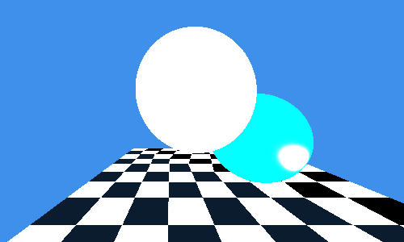

asmt 3
asmt 4

Note on assmt 3: I was unable to get phong working in time. I originally used javascript to implement my raytacer,
but switched to rust as I was concerned about compile times.
params
Sphere 1
- radius: 12
- pos: [0, -6, 20]
Sphere 2
- radius: 12
- pos: [15, 4, 25]
floor, triangle 1
- radius: 12
- pos: [[50, 20, 10], [-30, 20, 10], [-50, 20, 60]]
floor, triangle 2
- radius: 12
- pos: [[50, 20, 10], [80, 20, 60], [-50, 20, 60]]
camera
- focal length: 100
- pos: [1,0,0]